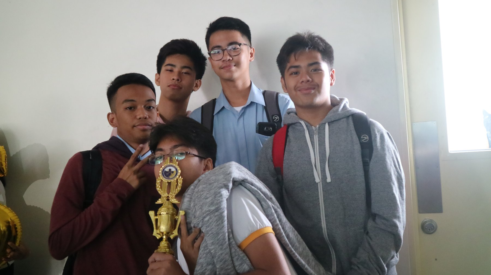
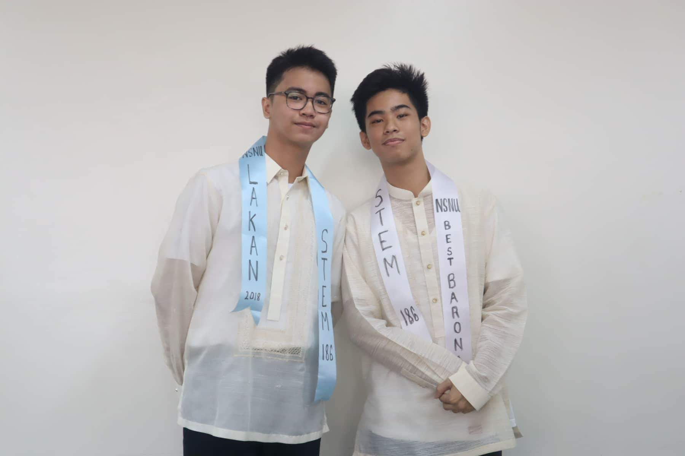
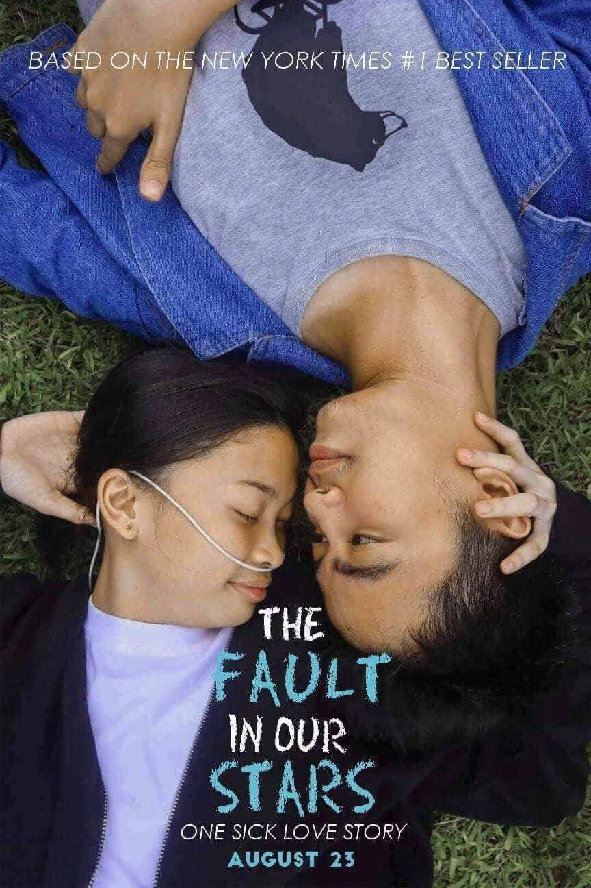
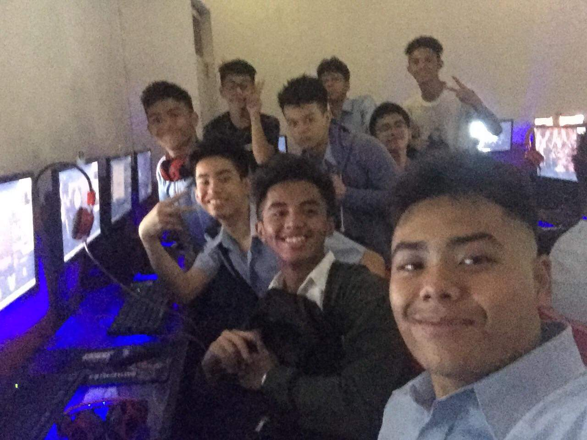
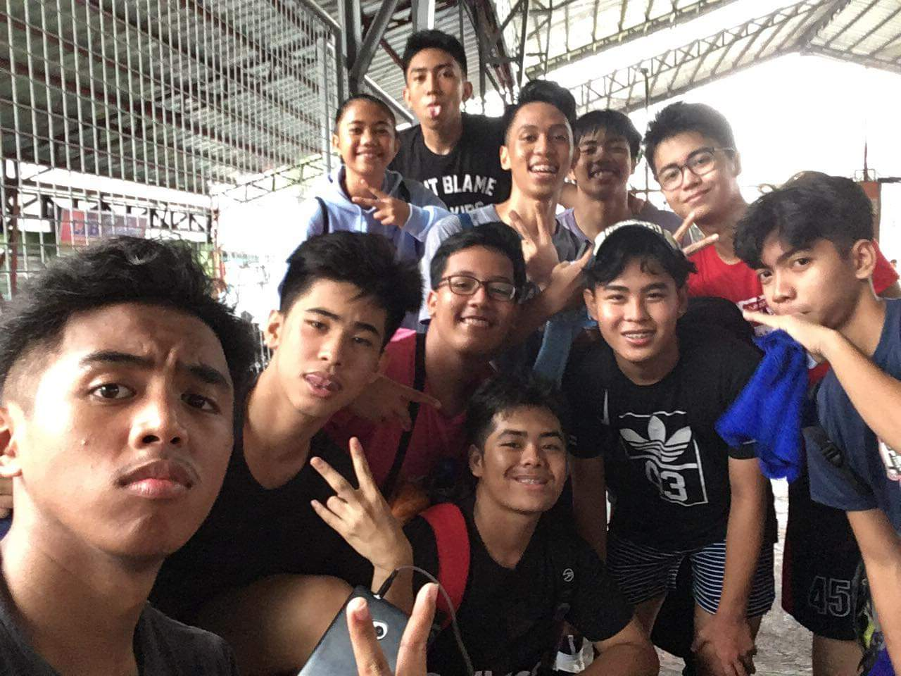
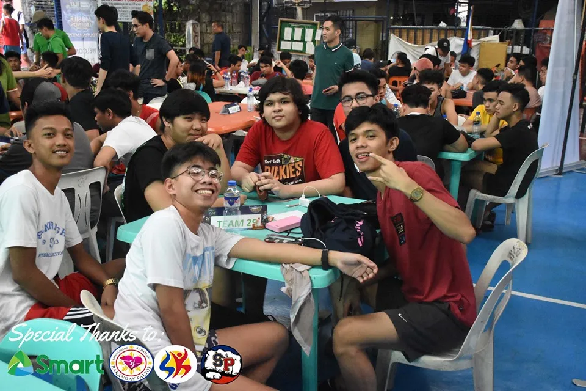
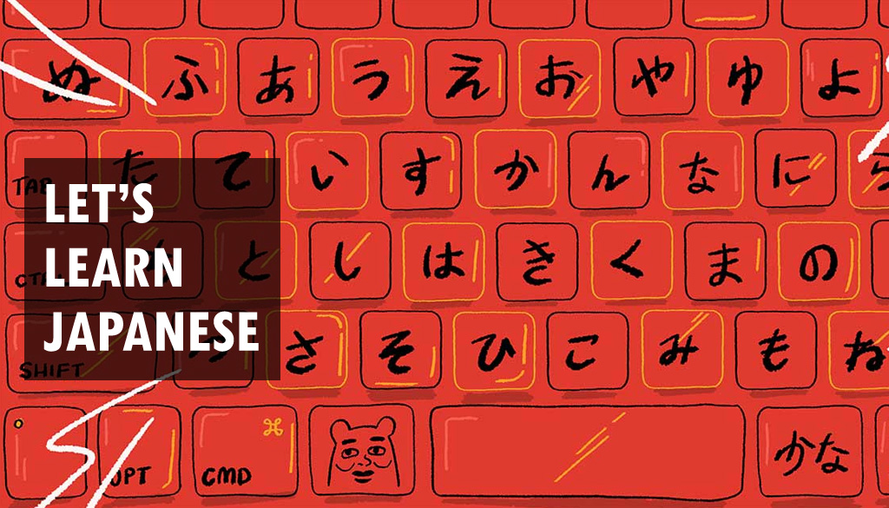
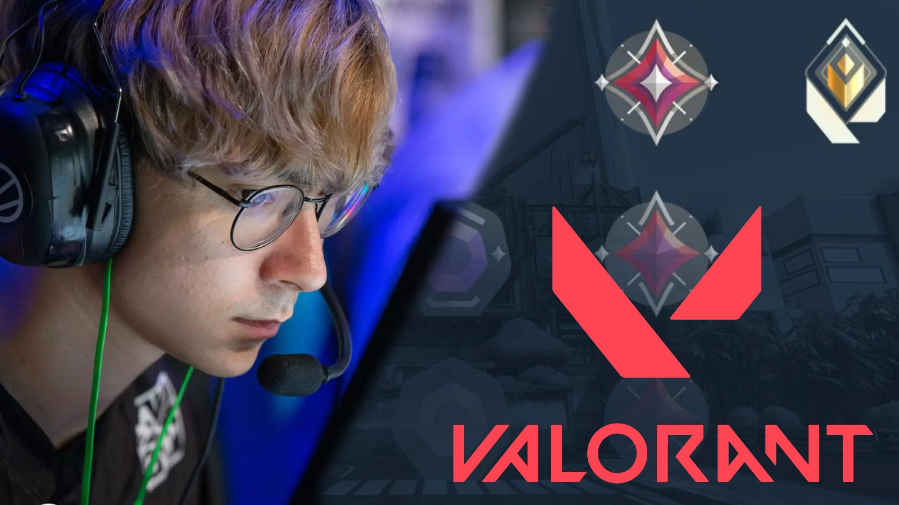

ALL ABOUT MYSELF
My name is Renz R Delarmente. This page is all about my Skills, Hobbies and Interest.
My Skills
As a college student the most important purpose of living my life in an effective and peaceful manner is always honest on whatever you do, be persistent and be delegated towards my work.1 It is important to note that my stress tolerance is quite high, which I practically improved.2 In view of the fact that studying at university sometimes refers to being under pressure because of the difficulties of subjects, preparing for exams, etc. 3 Furthermore, professors are impressed on those students who can maintain effective performance under pressure or adversity.4 Stress levels can be reduced if individuals are put in a team.5 My ability to engage in a group has been cultivated since I was a child.6 Nonetheless, completing group presentations and projects with my classmates has helped me to develop strategic and leadership skills.7 I feel that forming teams can result in more efficient and timely outputs as well as improved decision-making abilities.8 In terms of career advancement, there are a number of benefits to working in a team.9 Leadership abilities can help us advance in our work.10 In certain situations, I am confident that by taking greater initiative, motivating others to do good, and instilling trust in my professional skills.11 I will be able to lead effectively and mobilize the group for high performance.12 From my point of view, my self-esteem and confidence are both averages in my opinion.13 However, I believe that through doing more and more presentations at university, I will be able to develop those talents.14 One thing that I can say is that I am good at Time management because having good time management can you lead to a successful future.15 Also, I am a hard-working person because it is the key for me to be successful and I gained this positive trait from my parents because they work hard too much for our family.16 I am a friendly and talkative person.17 I'm not satisfied in my day when I don't talk to my friends even if I meet new people, I'm always the first one to open up a conversation to avoid awkwardness.18 I enjoy having a conversation with my friends and family to make them happy.19 The one skill that I want to improve is being fluent in speaking English because it is very important nowadays and I don't want people to judge me when I speak something wrong because it will affect my confidence.20 That's why I like to try new things too because if you never try new things in your life you will never know what you love and it can also help me to be happy, learn and grow.21



My Hobbies
Hobbies plays a important part of life because it is the get away from the stress in my everyday life.1 One of the hobbies that I liked is playing video games.2 I like playing video games since I was a child because my father bought us a computer with a game that is called Counter Strike
.3 I remember that me and my brother used to play 5v5 with other customers in a computer shop.4 Today, I am addicted to game called Valorant
I love playing it with my friends because it is enjoying and relaxing.5 I'm kind of interested in streaming the video game that I play in the future and I'm interested also in buying my pc for my video stream.6 After playing video games, I also love watching anime like Attack on Titan
and Demon slayer
because the animation is satisfying and the story is amazing to the point that every episode you will amazed.7 Before the pandemic, I love playing sports like Basketball and Jogging.8 I am playing basketball every day before the pandemic because I have a friend that has a half-court outside their house and my house is near that's why it is within walking distance.9 I also love jogging with my brother every 6 in the morning and it is good because we go to the famous lugawan in our village after we run for 2 hours.10 When pandemic started to hit our country, I stop playing because we don't have a court to play because it become a vaccination center of our village.11 That's why when I have free time I like to watch TV series in Netflix to lessen my boredom since I'm staying all day here in our house.12 I also love to read anime manga like Attack on Titan, Boruto, etc because it will help to improve and expand my vocabulary in English.13 I also love playing mobile games like Mobile Legends
and we join one tournament before pandemic and Call of Duty
because it is very addicting and you can play it everywhere.14 Mobile Legends become famous in pandemic since everyone is playing it because you can play with your friends in your own house.15 The lockdown becomes very strict in our village to the point you cannot go outside when you dont have a quarantine pass.16 That's why I started exercising 2 hours every other day using our treadmill and stationary bike.17 That's why Hobbies are very helpful to me because this is the way to relieve my stress in my life.18 It helps me to release my stress and it makes me productive for a day.19 It is the key to forgetting my daily problems in my life.20



My Interest
Since i was a kid, My interest is playing video games which are shooting games. The reason is that I want to become a pro player so that I can play in tournaments.1 But maybe after finishing college, I can pursue this interest.2 Also, I'm having an interest in streaming my game in Facebook so that I can be famous while earning money through streaming.3 I also have an interest to buy a car for myself because I want to travel with my family and we can visit another place.4 My interest that I want to fulfill after college is to learn how to be fluent in English.5 It is important to improve my English because it will be used in my future work and if I meet other people that only speak English.6 I also want to expand my vocabulary in English so that I will not stutter when someone asks me using the English language.7 I'm also having interest in curing other people but I will not pursue it because it is very expensive and our country doesn't treat Healthcare workers well.8 Curing people comes to my mind because I watched a Netflix series called The Good Doctor
.9 I'm also interested learning Japanese language so that I can understand the Anime that I watch without subtitle.10 Learning how to speak in Japanese is good because when I play Tokyo Server in Valorant I cannot understand and I don't know how to respond to them.11 When it comes to my BSIT course, I want to master programming language so that I can find decent work after college.12 That's why I will work hard and understand it to achieve my goal in my course. 13 I'm also interested in traveling to a country with snow just like in the movies.14 I want to experience snow in South Korea so that I can see their best tourist spot and I want to try Skiing.15 I'm also interested in buying many plants for my mother so that our house will become eco-friendly.16 I also want to become a Content Creator in Facebook so that I can bond with other streamers and tell them that they are my inspiration that's why I started streaming. 17 I am hoping that I can do all interests that I want in the future.18 I will promise to myself that I will work hard to achieve my dreams and make my life roadmap successful.19 Overall, These are the interest that I want to achieve in the future.20



Date Updated: Feb 16,2022
Page Created By: Renz R.Delarmente